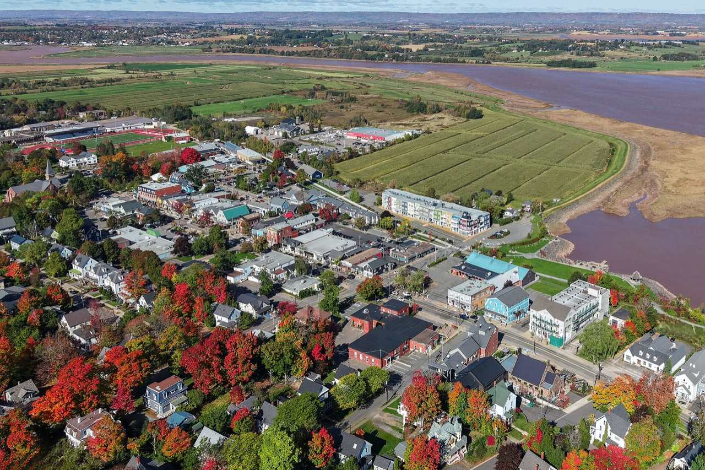
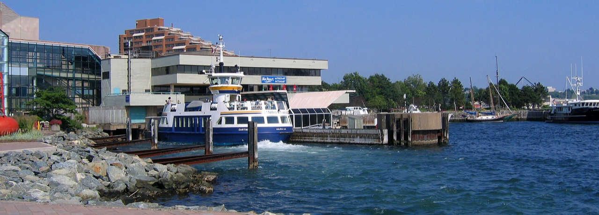
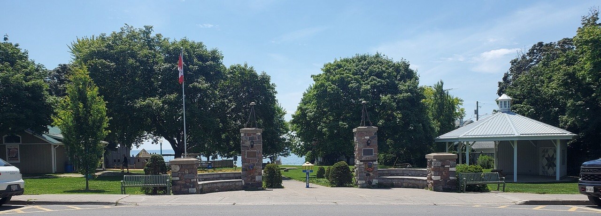
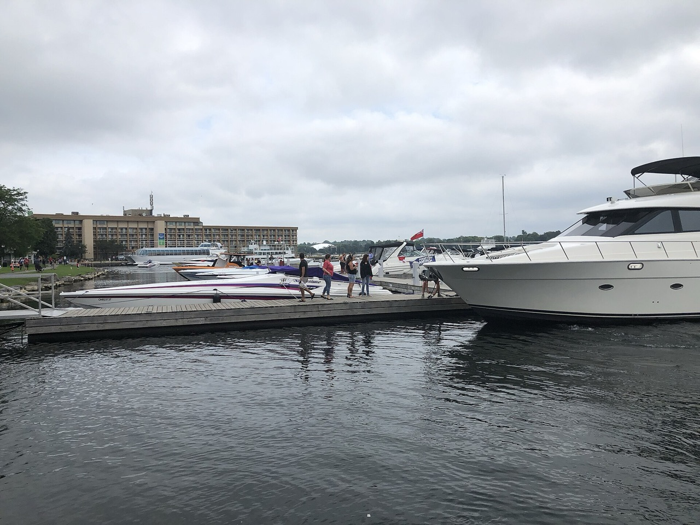
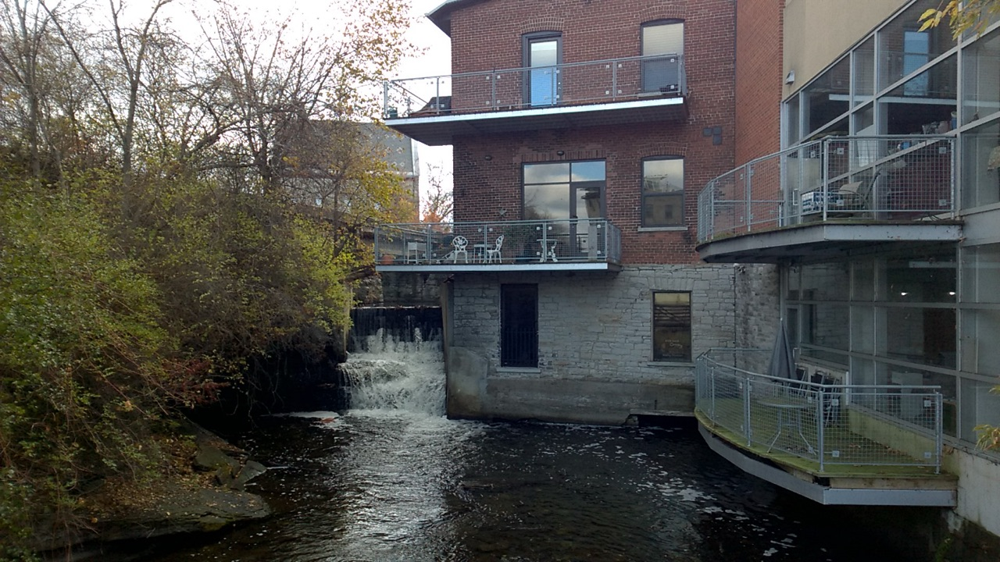
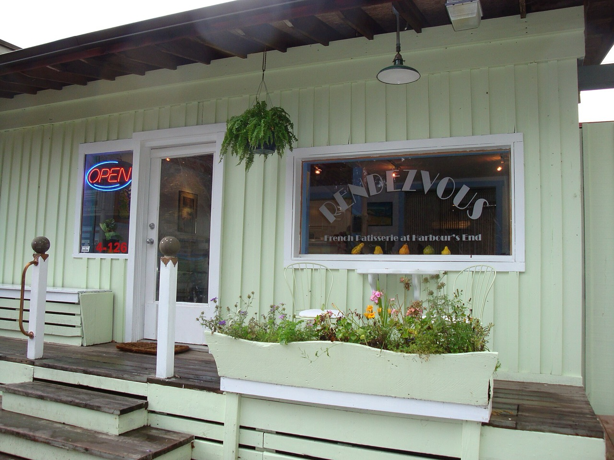
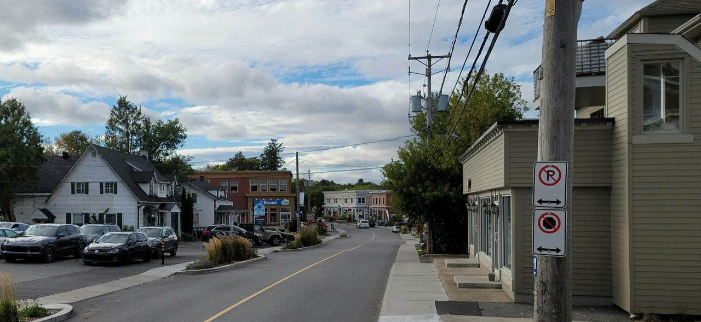
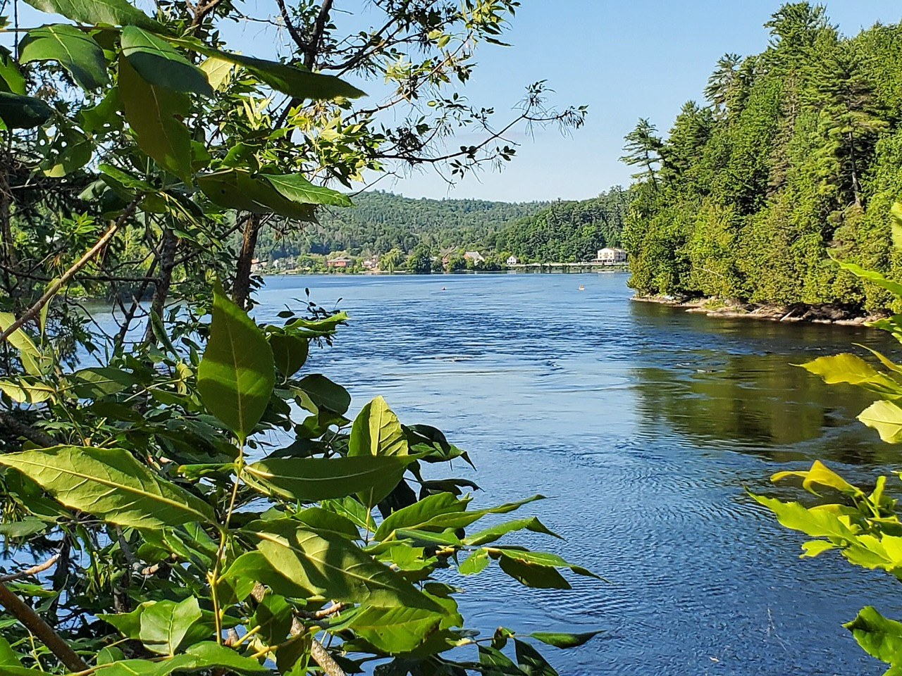
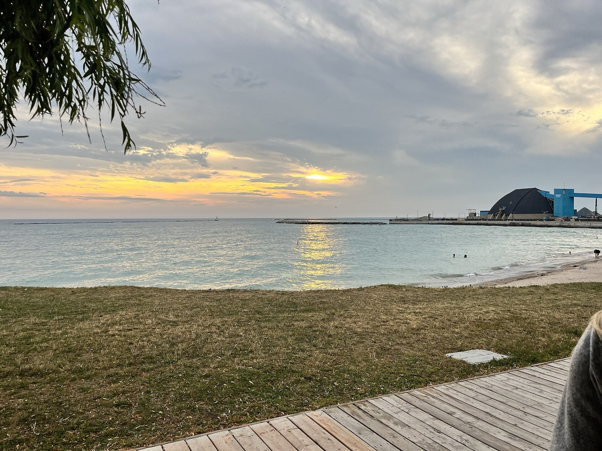
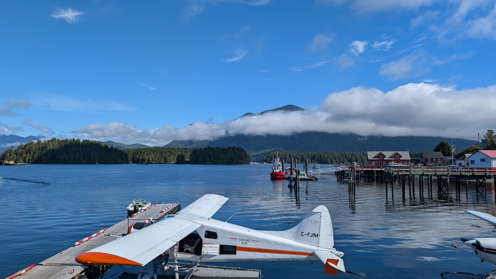

How we shortlisted communities
- Culture: Welcoming, creative, quirky, slightly countercultural communities with active social scenes, especially for people in their 30s.
- Food: Strong independent restaurants, cafés, bakeries and local food culture.
- Nature & cycling: Everyday access to peaceful greenspace, hiking, water and good gravel cycling.
- Lifestyle: Small towns or distinctive urban neighbourhoods, without feeling isolated or overly rural.
- Housing: Affordable detached homes.
- Climate: Ideally less snowfall than Ottawa (~224 cm/year).
- Healthcare: Reasonable access to family doctors, hospitals and specialists.
- Amenities: Reliable internet, convenient groceries and everyday shopping.
- Travel: Ideally within an hour of an airport serving Philadelphia and Toronto, or within eight hours' drive of both.
The shortlist
The closest decisions were Wolfville versus Dartmouth, Almonte versus Salt Spring, and Hudson versus Wakefield. In each case, I considered whether a cultural advantage was large enough to justify the practical trade-off.
- 1Wolfville, NSBest overall expression of the food-growing, creative, outdoorsy small-town life
- 2Dartmouth, NSStrongest combination of community, food variety, healthcare access and everyday convenience
- 3Prince Edward County, ONExceptional maker-and-farm culture; healthcare is improving
- 4Kingston, ONExcellent livability and specialist access, with a substantial creative subculture
- 5Almonte, ONRemarkably authentic creative community, with Ottawa's services within reach
- 6Salt Spring Island, BCPerhaps the purest cultural match, but geography makes ordinary life harder
- 7Hudson, QCArtistic village character, excellent flight access, less grassroots energy
- 8Wakefield, QCExtraordinary outdoor and alternative culture; serious immediate healthcare setback
- 9Goderich, ONBeautiful, affordable and unusually promising primary-care context, but narrower cultural life
- 10Tofino, BCSpectacular lifestyle appeal, undermined by a severe detached-housing affordability gap
1 Nova Scotia
Wolfville
The small town that feels larger than itself

Wolfville understands something that many carefully branded rural towns miss: a healthy local culture needs more than good restaurants. It needs places where people repeatedly encounter one another. A Saturday at the farmers' market, a concert at Deep Roots, a film screening at the Al Whittle—these aren't merely attractions. They're the machinery of a small community.
Acadia University brings young people, visiting ideas and a slightly restless energy to a town surrounded by orchards, vineyards and the great exposed tidal landscapes of the Minas Basin. At Devour!, food becomes a reason to gather, not just another luxury purchase. Its new year-round studio and culinary centre makes that especially interesting. The town's free community-meal programming suggests a social fabric extending beyond people who can afford a special dinner.
The walking is unusually immediate: gardens, leafy streets, Reservoir Park, dykeland and the Harvest Moon Trailway. Quiet Valley roads offer long cycling days between farms and cafés. Nearby Kentville and New Minas expand the mundane shopping options without changing Wolfville's basic character.
It isn't effortlessly social, though. One recent Acadia student's Reddit account describes small-town isolation, a reminder that university energy doesn't automatically translate into an established adult friend circle. And this remains a small food scene, not an inexhaustible one.
Still, Wolfville places more of the things you're seeking within a surprisingly compact daily orbit than almost anywhere else on this list.
| Community size | 5,057 residents in 2021, plus a substantial university population |
|---|---|
| Snow | 170 cm annually, 54 cm below Ottawa |
| Housing | detached budget feasible |
| Internet | good fibre/cable |
| Travel | Halifax airport ~65–70 min, with accepted seasonal Philadelphia (PHL) service and Toronto Pearson (YYZ) connections |
| Healthcare | Valley Regional Hospital in nearby Kentville. As of April 1, 2026, 7.0% of Annapolis–Kings residents were registered as looking for a family doctor or nurse practitioner, compared with 5.7% across Nova Scotia; interim clinic appointments available but capacity-limited; Halifax for advanced specialty care. Trend: cautiously improving provincially, locally still difficult. |
| Outdoors / hazards | Reservoir Park, Harvest Moon Trailway, countryside gravel; localized low-lying coastal flooding |
| Requirement exceptions | Airport slightly beyond one hour; greater healthcare uncertainty than the provincial registry alone suggests |
2 Nova Scotia
Dartmouth
The neighbourhood-scale city with room to grow

There is something appealingly ordinary about Dartmouth's best moments. Coffee and a croissant on Ochterloney Street. Someone pushing a stroller beside Sullivan's Pond. The ferry crossing the harbour while the city carries on around it. Dartmouth feels less like a carefully preserved village than a neighbourhood people are actively making their own.
Downtown's Portland Street corridor is the heart of it. The Canteen makes serious seasonal cooking feel informal; Yeah Yeahs serves pizza, Buta Ramen adds variety, and Two If By Sea makes an excellent reason to linger over coffee. Across the street from the ferry, Alderney Landing hosts a Saturday farmers' market, Sunday artisans and cultural programming. Its Bluenose Ghosts festivities are the kind of idiosyncratic tradition that gives a place a little personality.
Resident discussions frequently return to the same pleasures: walkable streets, neighbouring parks and a genuine sense of community around downtown and Crichton Park. Not every block has the same atmosphere, and residents also discuss traffic, development and housing costs. But these are recognizably the arguments of people invested in their neighbourhood.
Shubie Park supplies excellent everyday woods and water; the Salt Marsh Trail opens onto a quieter coastal landscape. Halifax adds cuisines, concerts, specialist services and shopping without requiring Dartmouth to provide everything itself.
It's less explicitly countercultural than Wolfville, but perhaps easier to build a full, varied life in—especially in your thirties.
| Community size | Substantial urban community within Halifax Regional Municipality, population 439,819 in 2021 |
|---|---|
| Snow | 210 cm, 14 cm below Ottawa |
| Housing | detached budget feasible |
| Internet | excellent fibre/cable |
| Travel | Halifax airport within the target hour, seasonal PHL service and YYZ flights |
| Healthcare | Dartmouth-area local/primary services, with Halifax's QEII and other regional hospitals nearby. As of April 1, 2026, 1.7% of Dartmouth / Southeastern residents were registered as looking for a family doctor or nurse practitioner, compared with 5.7% across Nova Scotia; greater specialist breadth than Wolfville, but subject to NS waits. Trend: improving, relatively strong locally. |
| Outdoors / hazards | Sullivan's Pond, Shubie Park, Salt Marsh Trail; localized coastal flooding |
| Requirement exceptions | Snow only modestly below Ottawa; Nova Scotia's specialist waits remain a significant concern |
3 Ontario
Prince Edward County
Where food, land and creative work naturally overlap

In Prince Edward County, the distance between an idea and a business sometimes seems unusually short. A farmer grows something. Someone else turns it into a beautiful dinner. An artist opens a studio. A former agricultural building finds another purpose. The result is one of Ontario's richest concentrations of independent food and creative enterprise, spread across a gently rolling landscape of fields, old houses and Lake Ontario shoreline.
Picton offers the most useful everyday centre. Bloomfield brings its small collection of shops, makers and cafés; Wellington adds waterfront life and a growing food scene. The PEC Studio Tour—58 artists across 39 studios in 2026—makes the County's creative community tangible. The Picton Fair, Wellington Pumpkinfest and recurring seasonal food events keep agriculture visible even as visitors arrive for restaurants and wine.
The Millennium Trail is an inviting gravel spine, and Macaulay Mountain gives Picton residents a valuable patch of everyday woodland. Lake swimming and farm-road rides add obvious pleasures.
The honest distinction is between visiting and living here. The County is geographically dispersed; good groceries, varied restaurants, friends and trails won't necessarily be in the same village. Its older population also makes the search for a younger social circle more intentional. Resident discussions reflect both genuine affection for County life and concern about housing becoming less accessible to the people who keep it running.
Tourism itself is not the problem. The important question is whether enough year-round residents can remain to sustain the culture that attracts everyone.
| Community size | 25,704 countywide in 2021, dispersed among villages and rural communities |
|---|---|
| Snow | 160 cm, 64 cm below Ottawa |
| Housing | detached budget feasible |
| Internet | Fibre is available in Picton and parts of the surrounding area |
| Travel | Approximately 7–8 hours driving to PHL; Pearson by road for YYZ flights; Oakville ~2.5–3.5 hours |
| Healthcare | Prince Edward County Memorial Hospital in Picton; Quinte/Belleville care and Kingston for more complex specialties. Nine physicians recruited by August 2026, with a tenth anticipated; substantial waitlist progress reported. Trend: meaningfully improving, though roster openings and specialist access still require verification. |
| Outdoors / hazards | Macaulay Mountain, Millennium Trail, lake access, quiet rural gravel; localized shore erosion |
| Requirement exceptions | Services and social life are dispersed; healthcare often requires regional travel |
4 Ontario
Kingston
A real city with an independent streak

Kingston is an interesting counterargument to the assumption that quirky culture requires a tiny population. Around Skeleton Park, the city turns distinctly neighbourly: old houses, front gardens, community noticeboards and streets that occasionally become places to gather rather than simply to drive through.
The Skeleton Park Arts Festival captures this particularly well. Its 2026 program paired independent musicians, community groups, local food and dozens of artisans. A September neighbourhood yard sale and block party went further, closing streets so neighbours could sell old things, play music and meet each other. This isn't a rural commune, but it is the kind of participatory culture you're looking for.
The wider city provides something smaller towns cannot: genuine dining breadth. Residents recommend places such as Miss Bao, Northside Espresso and Toast and Jam alongside longstanding downtown institutions. The Katarokwi Indigenous Market adds Indigenous art, food and makers to the waterfront's summer calendar.
The lakefront is immediately rewarding for walking, and the K&P Trail makes longer gravel outings possible. Queen's University keeps younger people flowing into the city, although the student population isn't identical to a settled thirtysomething community.
Reddit accounts are mixed on downtown vibrancy: some praise its walkability and food, others find it less spontaneous than a larger city. Kingston's cultural strengths are real, but concentrated. Choose a neighbourhood deliberately and it becomes a much better fit.
| Community size | Approximately 132,500 in 2021 |
|---|---|
| Snow | 150 cm, 74 cm below Ottawa |
| Housing | detached budget feasible |
| Internet | excellent fibre/cable |
| Travel | PHL roughly 7 hours driving; YYZ reachable by road; Oakville roughly 3 hours |
| Healthcare | Kingston Health Sciences Centre, Hotel Dieu, Providence Care and specialist/teaching networks. Ten family physicians recruited in 2026, 43 since 2022, including replacement of retirees. Trend: improving, not solved. Some residents still describe long primary-care searches. |
| Outdoors / hazards | Waterfront, K&P Trail, conservation areas; localized historic Inner Harbour contamination |
| Requirement exceptions | No major identified shortfall in snowfall, housing or internet; cultural fit depends strongly on neighbourhood |
5 Ontario
Almonte
A little mill town that still makes things

Almonte's particular gift is that its creativity feels earned. The old mills are not merely a backdrop for decorative shops; textiles, craft and reuse remain central to the town's identity. Fibrefest brings spinning, weaving, rug hooking and other fibre traditions into public view. Puppets Up! takes an even more eccentric approach, turning streets into an international puppet festival. And in winter, the volunteer-supported Folkus series puts Canadian roots musicians in an intimate old town hall.
That combination brings together heritage skills, grassroots arts and everyday community life.
Mill Street and the riverside core are the obvious places to spend time. The North Market, independent eateries and small specialty food shops give everyday errands some personality. The Mississippi Riverwalk makes water a recurring part of life rather than a weekend excursion. Mill of Kintail offers woods and trails; the Ottawa Valley Recreational Trail and nearby gravel roads extend that rhythm onto a bicycle.
Residents on Reddit describe an attractive town with engaged neighbours and locally supported businesses. Others caution that friendship circles can be established and difficult to enter, particularly for younger newcomers. That tension is worth taking seriously in a town this size.
What elevates Almonte is that Carleton Place and Ottawa prevent small-town limitations from becoming absolute. You can live somewhere genuinely distinctive without having to make every purchase or specialist appointment a major expedition.
| Community size | 6,098 in the Almonte urban settlement, 2021 |
|---|---|
| Snow | 170 cm, 54 cm below Ottawa |
| Housing | detached budget feasible |
| Internet | fibre/cable address-dependent |
| Travel | Ottawa airport lacks nonstop PHL service, so connect or drive; YYZ air service available; Oakville ~5 hours |
| Healthcare | Almonte General Hospital 24/7 emergency; local Ottawa Valley Family Health Team and Ottawa specialty network. The local team listed 14 physicians and two NPs in May 2026, not proof of open patient rosters. A September recruitment posting suggests continued efforts. Trend: active recruitment, but attachment outcome not established. |
| Outdoors / hazards | Mississippi Riverwalk, Mill of Kintail, OVRT, gravel backroads; localized river flood risk |
| Requirement exceptions | No nonstop PHL flight from the nearby airport; newcomer access to local primary care unverified |
6 British Columbia
Salt Spring Island
The dream of the self-sufficient island, still alive beneath the contradictions

Salt Spring is the place on this list where the Whole Earth Catalog feels least like a historical reference. Gardens, workshops, pottery studios, small farms, homemade preserves: so much of the island's identity still comes from people growing, making and selling things themselves.
The Saturday Market in Ganges captures that inheritance, with its commitment to island-produced food and crafts. At the Fall Fair, zucchini races, sheep shearing and jars of preserves still matter. Seedy Saturday extends the same spirit into seed saving and food-growing knowledge. These are not merely performances of rustic life; they represent skills and institutions that residents keep maintaining.
Outside Ganges, forest trails, small beaches and winding roads create an appealingly unhurried landscape. Ruckle Park and the island's woodland paths reward regular exploration. Farm produce is excellent, and the food culture has more personality than its restaurant count might suggest.
But the Reddit accounts are particularly instructive. Some residents describe a changed island, wealthier and less spontaneously communal than its reputation implies. Others, including recent arrivals, report genuinely joyful lives built around cycling, gardening and getting involved. One recent newcomer described riding thousands of kilometres within months of moving.
Neither portrait is the whole story. The larger issue is that Salt Spring is dispersed, socially as well as geographically. Its narrow roads aren't an ideal substitute for dedicated gravel routes, and ferries complicate shopping, travel and specialist appointments.
Perhaps the strongest cultural fit overall, with substantial practical compromises.
| Community size | 11,635 in 2021; a dispersed island community |
|---|---|
| Snow | Below Ottawa snowfall ceiling |
| Housing | detached budget feasible but selective |
| Internet | mixed cable and limited fibre |
| Travel | Ferries and onward airport journeys complicate PHL/YYZ access |
| Healthcare | Lady Minto Hospital has 24/7 emergency care; Victoria/Vancouver Island for wider specialty services. Two physicians recruited in September 2026 should attach ~1,100 additional patients and preserve ~500 existing attachments. Regional Island Health attachment median was 388 days in April. Trend: meaningful local improvement, persistent regional barriers. |
| Outdoors / hazards | Forest hikes, Ruckle Park, coastlines; less ideal gravel infrastructure; drought and water-security concerns |
| Requirement exceptions | Substantial airport/ferry complications; address-dependent internet and limited housing selection |
7 Quebec
Hudson
An arts village with one foot in the metropolis

Hudson is a pleasant contradiction: a leafy, rather elegant village that has retained an independent cultural life despite sitting within Montréal's wider orbit.
Its main street is modest but unusually personable, with cafés, restaurants, small shops and a distinctly bilingual social character. The Hudson Village Theatre provides year-round performance in a place where such a venue could easily disappear. The Hudson Music Festival brings independent and established musicians into the community each summer. Smaller programs at the Hudson Creative Hub extend the calendar into workshops, markets and hands-on creative activity.
The surrounding forests, wetlands and Ottawa River landscapes lend Hudson a quiet, green quality. It's an appealing place for an everyday walk or a gentle ride. Cycling tends toward picturesque country roads rather than the extended off-road gravel networks found around Wakefield or Prince Edward County.
Hudson's cultural identity is more cultivated than countercultural. You can find artists, gardeners and community volunteers, but the prevailing atmosphere feels closer to an established arts-and-theatre village than a scrappy, experimental settlement. The local economy benefits from visitors and Montréal proximity; neither is inherently a disadvantage.
Its greatest practical appeal is the ability to live somewhere small without putting the services of a major city impossibly far away. That's a meaningful benefit for shopping, varied cuisines, specialist care and travel.
Yet the region's primary-care shortage is significant, and the planned new regional hospital is still a future promise rather than an available service. Hudson is charming, but its best practical features don't erase that distinction.
| Community size | 5,411 in 2021 |
|---|---|
| Snow | 240 cm, 16 cm above Ottawa |
| Housing | detached budget feasible |
| Internet | good fibre/cable |
| Travel | Montréal airport ~40 min, with direct PHL/YYZ service; Oakville approximately 5–6 hours |
| Healthcare | Regional hospitals and Montréal specialist access. In March 2026, 25,962 Vaudreuil–Soulanges residents awaited an individual doctor, though 25,306 had a clinic/provider affiliation. A new 404-bed hospital is scheduled to begin opening in summer 2028. Trend: access restructuring and future expansion, but present-day primary-care shortages remain. |
| Outdoors / hazards | River trails, woods, wetlands and scenic roads; localized river flooding |
| Requirement exceptions | Snowfall ceiling exceeded; significant primary-care challenges |
8 Quebec
Wakefield
A river village with an unusually strong independent spirit

Wakefield has the sort of atmosphere that many towns spend years trying to manufacture: music spilling out of a little venue, bicycles leaned against a café, woodsmoke, a river, artists and neighbours who seem to have chosen the place for reasons that extend beyond convenience.
Le Hibou and the Black Sheep Inn anchor an enduring independent-music identity. The Saturday Wakefield Market has connected local growers and makers since 1997. The Chelsea–Wakefield Studio Tour opens private creative spaces to the public, while October's Wakefield Writers Festival gives a small village a surprisingly ambitious literary calendar. These are compelling signs of participation, not simply consumption.
For cycling, Wakefield is one of the guide's clearest winners. Hilly gravel roads and quiet forested routes make the surrounding countryside a natural playground. Gatineau Park is close enough for frequent hiking, while the village and river provide easy, smaller daily pleasures.
There's also a recognizably alternative sensibility: environmentally minded, arts-oriented, sometimes a little improvised. That makes it a particularly attractive choice on cultural grounds.
The difficulty is that a village of this scale depends heavily on regional services. Shopping and restaurant variety are limited, and finding a wider social group may involve Gatineau or Ottawa. More importantly, Wakefield's family-medicine infrastructure is facing an immediate and unusually serious disruption.
This is a place I'd love to recommend more highly. But its healthcare setback is too consequential to treat as an ordinary small-town inconvenience.
| Community size | Small village within La Pêche municipality, population 8,636 in 2021 |
|---|---|
| Snow | 240 cm, 16 cm above Ottawa |
| Housing | detached budget feasible |
| Internet | internet reliability variable |
| Travel | Ottawa-area flights require a PHL connection or alternative ground journey; Oakville approximately 5 hours |
| Healthcare | Local hospital services and Gatineau regional specialist network. Wakefield Family Medical Centre is scheduled to close October 31, 2026, affecting continuity for a catchment of roughly 12,000 patients; its doctor count fell from 14 to five. Some transfers are anticipated but not guaranteed. Trend: deteriorating sharply in the immediate term. |
| Outdoors / hazards | Gatineau Park, river paths, outstanding hilly gravel; localized river flooding |
| Requirement exceptions | Snow ceiling exceeded, difficult PHL access, variable internet and major healthcare disruption |
9 Ontario
Goderich
An appealing lakeside town still searching for a broader creative identity

Goderich has the ingredients for a rather lovely daily life: handsome old streets, an unusual octagonal town square, a sandy Lake Huron shoreline and enough nearby woodland to make a walk feel like a ritual rather than an errand.
Its relationship with the lake is central. The sunsets aren't a special occasion; they're part of the town's weekly rhythm. Maitland Woods makes a convenient escape into the trees, while the Goderich-to-Guelph Rail Trail creates one of the more compelling long-distance gravel cycling opportunities anywhere on this list.
Community events are strong for a town this size. The Celtic Roots Festival combines music, workshops and traditional crafts. The Salt and Harvest Festival and regular markets keep local history, food and making visible, while the courthouse square gives residents a natural gathering place.
The food scene is smaller than Wolfville's or PEC's, but local bakeries, independent eateries and increasingly varied options make it more interesting than a generic lakeside retirement town. The cafés and lakefront would provide pleasant everyday routines.
What gives me pause is the social depth. Resident Reddit discussions describe walkability, friendliness and quiet living, but also limited cultural diversity and the need to travel for more specialized services. For people in their early thirties seeking a substantial creative community, that gap matters.
Goderich feels like a place with some of the right raw materials, rather than a fully realized match for the cultural life you're seeking.
| Community size | Approximately 8,000 residents in 2021 |
|---|---|
| Snow | 170 cm, 54 cm below Ottawa |
| Housing | detached budget feasible |
| Internet | good cable and some fibre |
| Travel | Pearson approximately 2h40 by road, with an Oakville stopover possible; PHL requires a longer journey; Oakville approximately 2.5–3 hours |
| Healthcare | Alexandra Marine and General Hospital; Huron–Perth region reports 93% primary-care attachment, above Ontario's 88.1% figure, and offers unattached-patient clinics. Many specialties still involve travel to larger centres. Trend: relatively strong attachment, continued efforts to address gaps. |
| Outdoors / hazards | Lake Huron beaches, Maitland Woods, G2G gravel trail; localized shoreline erosion |
| Requirement exceptions | Pearson airport significantly beyond one hour; narrower specialist access and cultural variety |
10 British Columbia
Tofino
A beautiful place whose everyday costs have overtaken the dream

Tofino is almost impossible to dismiss on atmosphere alone. Rainforest presses toward the ocean. The surf has its own timetable. Even ordinary journeys pass through a landscape that feels enormous and alive.
There remains a serious creative and ecological community here, shaped by the region's Indigenous cultures, conservation work, surfing, independent hospitality and local makers. The Saturday Market fills the Village Green with crafts and food. The Clayoquot Sound Community Theatre hosts Monday Night Movies, and the winter calendar includes the wonderfully specific Tofino Oyster Fest and Winter Nights programming. This is a real year-round town, not merely a collection of hotels.
Everyday nature is extraordinary: beaches, coastal rainforest and Pacific Rim trails are woven into local life. Tofino is especially appealing for walking, surfing and paved leisure cycling, although it offers a different kind of riding from the gravel-heavy communities higher on this list.
But Tofino is also the clearest example where tourism's effects on residents have become part of the problem. In 2025, local reporting documented substantial concern over housing displacement and the difficulty of retaining the workers on whom the town depends. Reddit residents describe a less intimate community than in earlier decades, although others still defend its beauty and social life.
The decisive fact is the housing budget. At a detached asking median around $2.2 million, Tofino isn't merely stretching the target; it substantially exceeds it. No amount of beautiful coastline resolves that.
| Community size | 2,516 in 2021 |
|---|---|
| Snow | Below Ottawa snowfall ceiling |
| Housing | detached asking median approximately $2.2M, far above budget |
| Internet | good cable |
| Travel | Remote Vancouver Island location with substantial additional travel to reach major flights; PHL/YYZ journeys indirect |
| Healthcare | Tofino General Hospital provides emergency care. A local clinic reported selective new-patient intake in 2026; more complex specialist needs commonly involve Port Alberni, Nanaimo or Victoria. Island Health attachment median 388 days in April. Trend: some local primary-care improvement, substantial geographic barriers persist. |
| Outdoors / hazards | Pacific Rim, coastal forest, beaches and paved cycling; drought/water security, earthquake and tsunami exposure |
| Requirement exceptions | Detached housing substantially exceeds the budget, difficult airport access and substantial healthcare travel |
What the ranking reveals
Best small-town cultural match
WolfvilleA compact agricultural university town with unusually rich food, arts and community institutions. Healthcare is the reason to hesitate, not a lack of personality.
Best practical all-rounder
DartmouthIf specialist access, varied food and a substantial social network become more important, Dartmouth could reasonably move to number one.
Best Ontario countryside option
Prince Edward CountyThe strongest regional combination of agriculture, independent food and makers, with encouraging improvements in physician recruitment.
Best small-town balance
AlmonteMore genuinely aligned with your DIY and community interests than Hudson or Goderich, without the extreme logistical burden of Salt Spring.
Most culturally compelling exception
Salt SpringWorth considering if you discover that island life itself—not just the culture—is something you actively want.
The healthcare takeaway
I'd distinguish three groups.
The strongest practical medical geographies are Kingston, Dartmouth and Almonte. Kingston has a tertiary-care and teaching-hospital network; Dartmouth has access to Halifax's hospital system and comparatively low local primary-care registry numbers; Almonte benefits from proximity to Ottawa, though getting attached locally is not assured.
The clearest evidence of recent improvement is in Prince Edward County, Kingston, Salt Spring and Nova Scotia's overall primary-care registry. Those changes are promising, but recruiting physicians and reducing waitlists aren't the same as guaranteeing rapid appointments.
The biggest healthcare cautions are Wakefield's imminent primary-care closure, Hudson's large individual-doctor waitlist, and the specialist travel required from Salt Spring and Tofino. Wakefield's access to Ottawa should not be treated as equivalent to being an Ontario resident with an Ontario primary-care and referral network.
For all ten communities, I found stronger evidence on primary-care attachment and recruitment than on town-level specialist consultation waits. Where those figures aren't published, I used available regional and provincial information and travel-to-specialist considerations rather than inventing local numbers. Reddit evidence provides useful lived context, but not reliable population-wide estimates.
Where I’d focus next
Wolfville, Dartmouth, Prince Edward County and Almonte are the four I'd investigate most seriously as potential homes. Kingston belongs in that group if you want to maximize healthcare access and restaurant variety.
I'd keep Salt Spring as a distinct, higher-compromise possibility: somewhere to test through an extended stay rather than compare purely on paper. Wakefield deserves similar cultural attention, but its immediate healthcare situation makes it difficult to recommend without evidence of a successful patient transition.
The most important question on future visits won't be whether you have a wonderful Saturday. It'll be whether you can picture an ordinary Wednesday in February—and still want to be there.
Photography
Photographs via Wikimedia Commons. Credits, originals and licences:
- The Al Whittle Theatre, Wolfville. chester902 · Public domain. Resized; displayed with a crop.
- Wolfville and the dykelands. Quintin Soloviev · CC BY 4.0. Resized; displayed with a crop.
- The ferry at Dartmouth’s waterfront, 2007. Robert Alfers · Public domain. Resized; displayed with a crop.
- Wellington Park, Prince Edward County. Cantons-de-l'Est · CC0. Resized; displayed with a crop.
- Along the Kingston waterfront. Ross Dunn - Thanks for 13 million + views · CC BY-SA 2.0. Resized; displayed with a crop.
- Old mills on the Mississippi River, Almonte. robin_ottawa (I'm on a phone!) from Ottawa, Canada · CC BY-SA 2.0. Resized; displayed with a crop.
- A café on Salt Spring Island. Brunosaltspring · CC BY-SA 3.0. Resized; displayed with a crop.
- Rue Main in the village of Hudson. Veillg1 · CC BY-SA 4.0. Resized; displayed with a crop.
- The Gatineau River at Wakefield. Amqui · CC BY-SA 4.0. Resized; displayed with a crop.
- Evening at Main Beach, Goderich. Emily CA (MPL) · CC BY-SA 4.0. Resized; displayed with a crop.
- The harbour at Tofino. গীতাশ্ৰী গগৈ আপ্তে · CC0. Resized; displayed with a crop.
.jpg){kind=link}


.jpg){kind=link}
.jpg){kind=link}

-Rue_Main,_au_centre_du_village-2022-09-22_1.jpg){kind=link}